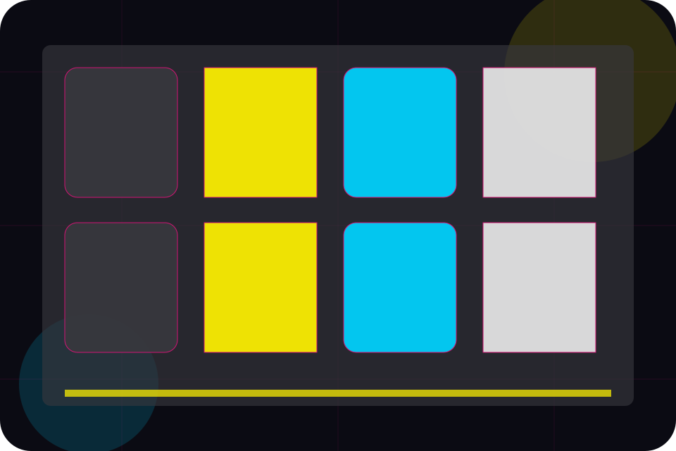
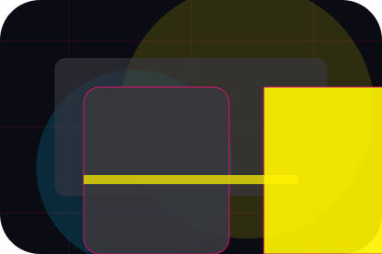
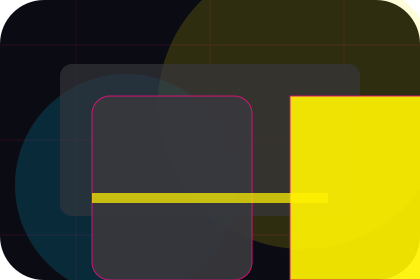
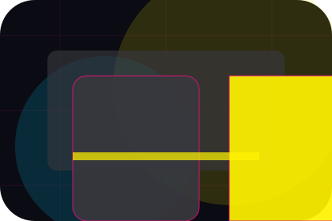
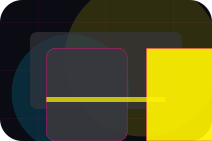
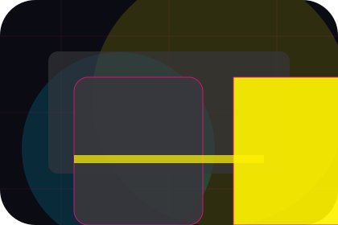
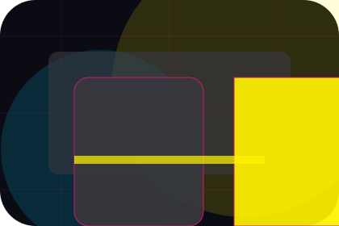
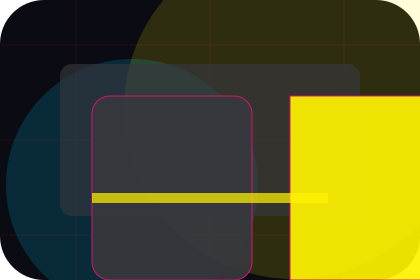
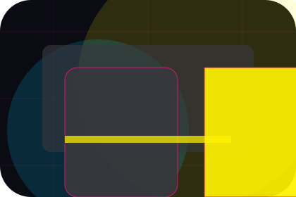
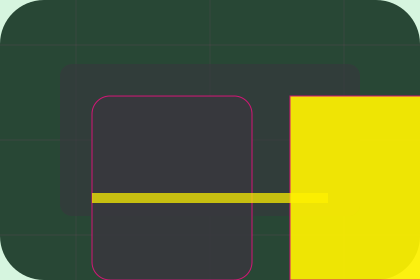

Content / 01
Content by Wave
Content shaped for media, broadcasting & digital content decisions.
Content opens as a clear media decision hub: what Wave offers, who it helps, why it matters, and which route to take first.
The first screen combines positioning, proof, primary action, and fast internal navigation, so people can act immediately or compare the rest of the content route with context.
Media scopeCompare optionsRequest advice
Angular media hero
Filter the schedule
Select the closest route and Wave keeps the next step, proof, and follow-up expectation aligned with audience reach and timing.

Content / 02
Video inside content
Video adds professional context to the content route, using the neon editorial news grid structure to support audience reach and timing before visitors choose a next step.
Wave uses angled story cards and focused copy to make the decision easier to scan, aligning the section with audience reach and timing rather than filling space.
Explore Content
Context
Video gives the page a specific angle instead of repeating the navigation label.

Judgment
The angled story cards show what to compare, what to avoid, and what matters most for media, broadcasting & digital content visitors.

Direction
The final cue points to a useful internal route so the section keeps the journey moving.
Content / 03
Audio inside content
Audio adds professional context to the content route, using the neon editorial news grid structure to support audience reach and timing before visitors choose a next step.
Wave uses angled story cards and focused copy to make the decision easier to scan, aligning the section with audience reach and timing rather than filling space.
Explore ContentContext
Audio gives the page a specific angle instead of repeating the navigation label.
Judgment
The angled story cards show what to compare, what to avoid, and what matters most for media, broadcasting & digital content visitors.

Direction
The final cue points to a useful internal route so the section keeps the journey moving.
Content / 04
Articles for deeper decisions
Articles gives researching visitors a practical route into guides, checklists, and comparison material without leaving the site structure.
Each resource behaves like a useful internal link, giving cold and warm visitors a way to learn, compare, and return to the action path.
View ResourcesWave structures articles around guide, checklist, and a clear next route so visitors can compare the block quickly before they advertise with the team.
Advertise With UsWave articles guide
A useful entry point for visitors who need more context before they advertise with the team.
Open resourceWave articles checklist
A scannable comparison aid that makes research usable before the next decision.
Open resource
BriefWave articles brief
A route back to support, services, or contact when the visitor is ready to act.
Open resourceContent / 05
Categories inside content
Categories adds professional context to the content route, using the neon editorial news grid structure to support audience reach and timing before visitors choose a next step.
Wave uses angled story cards and focused copy to make the decision easier to scan, aligning the section with audience reach and timing rather than filling space.
Explore ContentContext
Categories gives the page a specific angle instead of repeating the navigation label.
Judgment
The angled story cards show what to compare, what to avoid, and what matters most for media, broadcasting & digital content visitors.

Direction
The final cue points to a useful internal route so the section keeps the journey moving.
Content / 06
Featured inside content
Featured adds professional context to the content route, using the neon editorial news grid structure to support audience reach and timing before visitors choose a next step.
Wave uses angled story cards and focused copy to make the decision easier to scan, aligning the section with audience reach and timing rather than filling space.
Explore ContentContext
Featured gives the page a specific angle instead of repeating the navigation label.
Content / 07
Latest inside content
Latest adds professional context to the content route, using the neon editorial news grid structure to support audience reach and timing before visitors choose a next step.
Wave uses angled story cards and focused copy to make the decision easier to scan, aligning the section with audience reach and timing rather than filling space.
Explore ContentContext
Latest gives the page a specific angle instead of repeating the navigation label.

Judgment
The angled story cards show what to compare, what to avoid, and what matters most for media, broadcasting & digital content visitors.

Direction
The final cue points to a useful internal route so the section keeps the journey moving.
Content / 08
Popular inside content
Popular adds professional context to the content route, using the neon editorial news grid structure to support audience reach and timing before visitors choose a next step.
Wave uses angled story cards and focused copy to make the decision easier to scan, aligning the section with audience reach and timing rather than filling space.
Explore Content- 01
Context
Popular gives the page a specific angle instead of repeating the navigation label.
- 02
Judgment
The angled story cards show what to compare, what to avoid, and what matters most for media, broadcasting & digital content visitors.
- 03
Direction
The final cue points to a useful internal route so the section keeps the journey moving.
Content / 10
Advertise With Us
Wave closes the content route with a clear action, a quick reminder of the value, and a low-friction way to advertise with the team.
Visitors who are ready can use the primary action. Visitors who are still comparing can scan the section links, proof, and support routes before they advertise with the team.
Advertise With UsThe final block keeps the choice simple: act now, compare one more proof route, or send enough detail for a focused response.
Advertise With Usaudience reach and timing
Advertise With Us
A media site with bold editorial grid, neon category strips, episode cards, and advertiser download routes. Content ends with a direct path to advertise with the team, plus enough context for visitors who still need to compare.

Advertise With Us